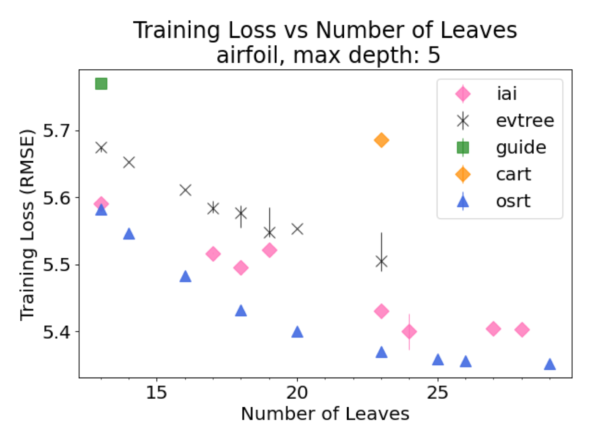
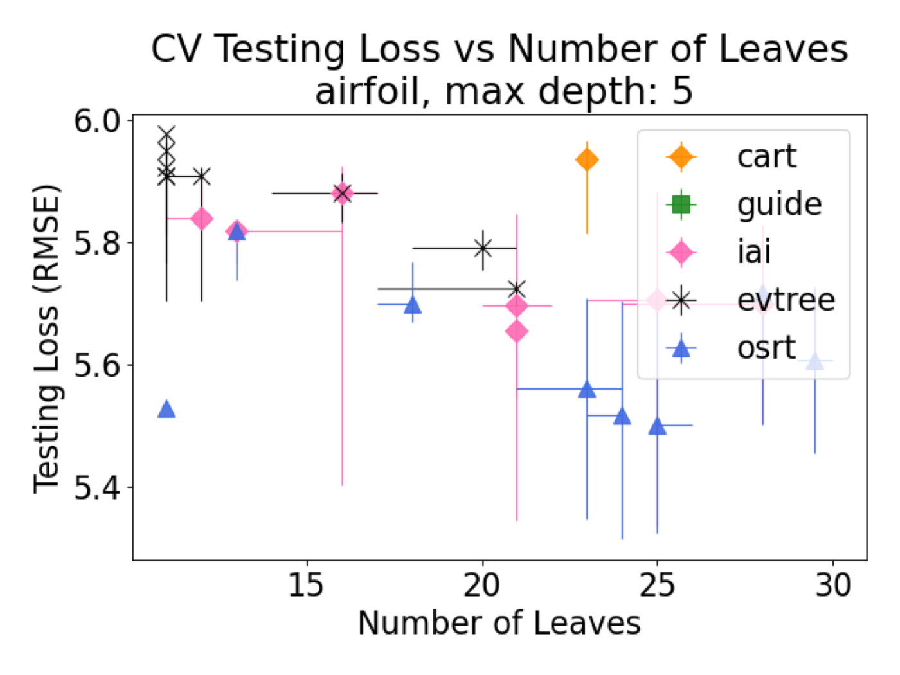
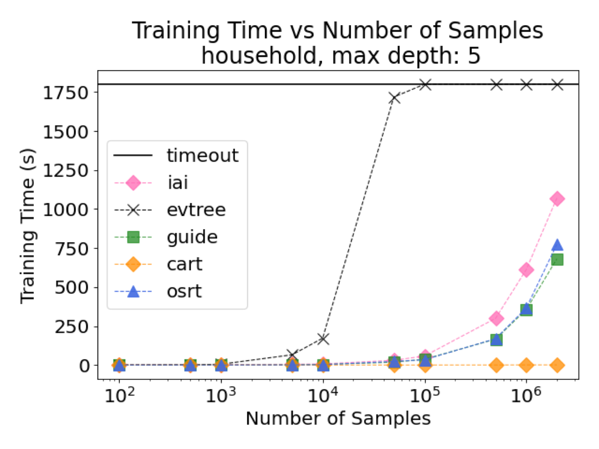
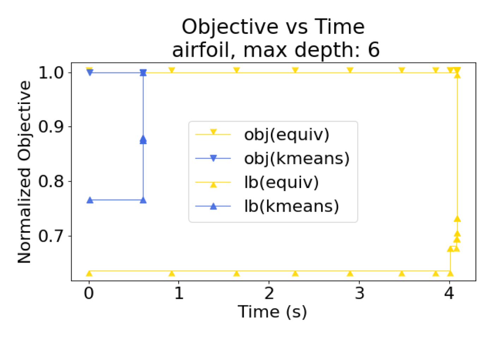

- 証明つきの最適な回帰木論文の知る限り、葉が定数の古典的な疎な回帰木で、最適性の証明と公開コードを備えた初めての手法。深さの制約なしでも解ける。
- k-means の下界で 4 分の 1 未満airfoil（深さ 6、\(\lambda = 0.005\)）で、k-means の下界は同値点の下界の 4 分の 1 未満の時間で収束した（1 秒未満）。
- 205 万件でも動くhousehold（2,049,280 件）の深さ 5 でも 30 分以内に解いた。Evtree はデータが 5 万件を超えると 30 分で終わらなかった。
最適な分類木は進んだが、回帰では二乗誤差に自然な下界がなく、証明つきの最適な木はなかった
回帰木は 1963 年の AID にさかのぼる古いモデルで、その研究のほとんどは貪欲な成長と刈り込みである。速いが全体としての最適性はなく、必要以上に大きな木になりやすい。分類では数理計画法や動的計画法で最適な木を求める研究が進んだが、0-1 損失には離散的な自然な下界があり、二値の整数計画も使える。実数値の二乗誤差を使う回帰ではそうはいかない。
論文によれば、葉に線形モデルや多項式を置く手法は予測の式が複雑になり、葉の数も正則化しない。Evtree は進化計算なので最適性の保証がなく、ORT（Dunn）と DTIP（Verwer ら）は数理計画法による定式化だが公開コードがない。IAI は商用のソフトウェアで、局所探索を使っているのではないかと論文は推測している。目標は、各分岐が 1 つの条件で葉の予測が定数の古典的な疎な回帰木を、最適性の証明つきで求めることである。
平均二乗誤差に葉の数の罰則を足した目的を、深さの制約なしで最小にする
特徴量は二値で（連続の特徴量は等幅に区切って one-hot 符号化した）、目的変数は実数である。木 \(t\) の目的は訓練データの平均二乗誤差と、葉の数 \(H_t\) に係数 \(\lambda\) を掛けた罰則の和である。
深さの制約を加えると探索空間は大きく減るが、制約が最適な木の深さより浅ければ、この目的の最適値を逃す。OSRT は深さの制約なしでも目的を最小にする木を見つけて最適性を示せる、と論文は述べる。木は葉の集合として表し、同じ葉を持つ木は内部の分岐が違っても同じとみなす。探索中の木はこれ以上分けない「固定した葉」と、まだ分けられる「分割する葉」に分かれる。
葉が \(C\) 枚の木の損失は、目的変数を 1 次元で \(C\) 個にクラスタリングした最適値より小さくならない
固定した葉の損失はその木から派生するどの木でも変わらないので下界になる。現在の最良値 \(R^c\) を超えれば、その木とその子孫はすべて捨てられる（定理 1）。葉を 1 枚増やすと罰則が \(\lambda\) 増えることを先読みすると、さらに捨てられる（定理 2）。
- 同値点の下界（定理 3）：特徴量がまったく同じデータ点は別々の葉に分けられないので、それらの目的変数のばらつき（平均からの二乗誤差）は必ず損失に残る。ただし二乗誤差ではこの下界は弱い。
- k-means の下界（定理 4、論文の新しい点）：分割する葉に入るデータを \(C\) 枚の葉に好きなように分け直せるとすると、損失が最小になるのは目的変数の近いものどうしをまとめたときで、これは 1 次元の k-means クラスタリングの最適値にあたる。木の構造を無視した分け方のほうが損失は小さいので、これは下界になる。
\(K\) は固定した葉の数である。同値点はかならず同じクラスタに入るという制約を加えると、さらに強い下界になる（k-means 同値点の下界、定理 5）。この制約つきの問題は同値点の集まりを平均値 1 点に置き換え、その数を重みにした重みつき k-means と同じ解を持つ（定理 6）。1 次元の重みつき k-means は数直線の順序を使う動的計画法（Song ら）で \(O(kN)\) で解ける。クラスタ数を増やしたときの損失の減り方は単調に小さくなる（定理 7）ので、減り方が \(\lambda\) を下回った時点でクラスタ数を増やすのをやめてよい。
GOSDT と同じ動的計画法の枠組みで、部分問題ごとに上界と下界を更新し、一致したら最適と分かる
OSRT は分類の最適な疎な木を求める GOSDT の枠組みの上に作られている。各部分問題はそこに入るデータ点の集合（サポート集合）で表され、上界と下界を依存グラフに記録して更新する。根の上界と下界が一致したら、その木が最適である。下界の計算（アルゴリズム 1）では、同値点をまとめて重みと平均を求め、重みつき k-means の動的計画法の表を 1 行ずつ伸ばし、損失の減り方が \(\lambda\) 以下になったところで止める。最後に、重みつき k-means の値を制約つき k-means の値に戻す定数の補正を足す。葉の数の上下限、分割の限定、順列、部分集合の限定など、GOSDT から引き継いだ限定もある（付録）。平均絶対誤差にも対応している。
ほかの手法の木は最適でないことが多く、OSRT は誤差と葉の数の釣り合いの限界を示し、汎化も最も良かった
実験は 12 個の回帰データ（UCI の 10 個と、Air quality、Medical Cost Personal）で、Intel Xeon Gold 6226（2.7 GHz）の 1 スレッドで行った。比べたのは CART、GUIDE、IAI、Evtree である。最適性の実験の時間の上限は 5 分、時間と大規模データの実験は 30 分にした。
- 最適性と汎化：ほかの手法の木は最適性を主張していても最適でないことが多く、一貫して最適な木を見つけたのは OSRT だけだった。OSRT の木は訓練誤差と葉の数の釣り合いの限界（最も効率の良い境界）を描き、ほかの手法がどれだけ最適から離れているかを測れるようになった。交差検証では OSRT の汎化性能が最も良かった。
- 結果の安定性：IAI と Evtree は乱数の種によって木の大きさと精度が大きくばらついたが、OSRT は乱数に頼らず、同じ設定なら常に同じ最適な木を返した（real-estate と servo、10 種の乱数）。
- 時間切れ：insurance では Evtree の実行の 27.5% が 5 分の上限を超え、OSRT は 0% だった。seoul-bike では Evtree が 55%、OSRT が 26.25% で、深さ 7 以上では Evtree がすべて時間切れになった。
- 大規模データ：household（2,049,280 件）の深さ 5 でも OSRT は 30 分以内に終わった。Evtree は 5 万件を超えると時間切れになった。
- k-means の下界の効果：airfoil（深さ 6、\(\lambda = 0.005\)）で、k-means の下界は同値点の下界の 4 分の 1 未満の時間で、1 秒未満で収束した。
- 深さの制約：servo では、深さ 4 の制約つきの最適な木（葉 5 枚、\(R^2 = 69.63\%\)）より、制約なしの最適な木（葉 6 枚、\(R^2 = 75\%\)）のほうが、葉 1 枚の増加で訓練データの分散を 5% 多く説明した。airquality（\(\lambda = 0.001\)）では、深さの制約なしの実行（115 秒）のほうが深さ 7 の制約つき（203 秒）より速く最適性に達した。制約があると計算した下界を使い回せないからである。




図2 論文の実験の図（arXiv v3）。図中の色は論文のもので、このページの色の意味とは対応しない。
分類の最適な疎な木の技法を回帰に広げたが、特徴量は二値化を前提にしている
- GOSDT の動的計画法と限定を回帰に持ち込み、二乗誤差に合う新しい下界（k-means の下界）を加えた研究である。
- 特徴量は二値化が前提で、実験では多くのデータで連続の特徴量を等幅の 4 区分にしている。相関の強い特徴量があって最適な木が過学習ぎみになる設定では OSRT が遅くなる、と論文は述べる。
- のちの van den Bos ら（2024）は葉に線形モデルを置く回帰木も動的計画法で最適に求め、ConTree（2025）は今後の課題として、この論文の下界を使った回帰への拡張を挙げている。
@inproceedings{zhang2023osrt,
title = {Optimal Sparse Regression Trees},
author = {Zhang, Rui and Xin, Rui and Seltzer, Margo and Rudin, Cynthia},
booktitle = {Proceedings of the AAAI Conference on Artificial Intelligence},
volume = {37},
number = {9},
pages = {11270--11279},
year = {2023},
doi = {10.1609/aaai.v37i9.26334}
}
ページの数値と図は arXiv 2211.14980 v3（付録を含む）による。出版版（AAAI）の本文とは照らし合わせていない。書誌情報と所属は Crossref と AAAI の論文ページによる。Rui Zhang と Rui Xin は同等の貢献とされている。